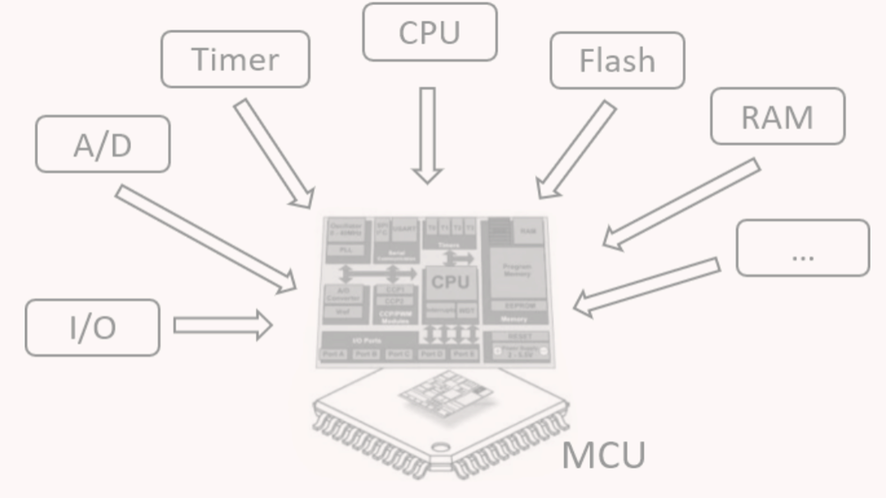

Ограничения микроконтроллеров
Микроконтроллеры обладают крайне ограниченными вычислительными ресурсами по сравнению с настольными и серверными системами.
Аппаратные ограничения
Наиболее распространёнными архитектурами являются ARM Cortex-M (Cortex-M4/M7), ESP32 от Espressif и RP2040 от Raspberry Pi. Все они ориентированы на выполнение простых, предсказуемых вычислений с минимальным энергопотреблением.
- Память: от нескольких десятков до сотен КБ SRAM и Flash-памяти.
- Вычисления: тактовые частоты от десятков до сотен МГц, отсутствие кэша и SIMD-расширений.
- Энергопотребление: критическое ограничение для автономных IoT-устройств.

Влияние на ML-модели
Эти ограничения требуют использования компактных архитектур, целочисленных вычислений и упрощённых нейронных сетей.